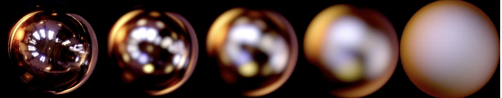

Geometry and Rendering Concepts
Reflective aspect of modelling
What is a BRDF? (Bidirectional reflectance distribution function)
A BRDF is a function that defines the amount of light reflected in the view direction for a given incident and outgoing light direction. These directions are taken in a co-ordinate system where the surface normal (n) acts as the z-axis.
The BRDF formal definition is as follows (first defined by Fred Nicodemus)[1] :

Equation variables
- L is the radiance (power from the source per area into a certain solid angle)
- E is the irradiance (power recieved by a surface per unit area)
- Θi is the angle between wi and n
- ωi is the direction of the incident ray
- ωr is the direction of the reflected ray

Figure 1.1 : Diagram showing vectors used in the BRDF definition [3]
Many rendering models like Cook-Torrance, are examples of BRDFs. Many BRDFs have been proposed other the years: some are designed to model a specific type of material. For example the Oren-Nayar model is suited to model the surface of the moon, which does not reflect light like a diffuse surface would. (diffuse surfaces scatter light at many angle when incident with one ray).
BRDF's have 3 key properties [2] :
- BRDF is a positive function, meaning that for all define inputs of the function, the output is positive.
- BRDF is reciprocal. In other words, BRDF(ωi,ωr) = BRDF(ωr,ωi) if you swap the incoming and outgoing direction in the function, the function returns the same result.
- Finally, a BRDF is energy conserving. This means that the BRDF can not create more light t han it receives. This is because an object cannot reflect more light than the amount of light incident on its surface. (unless the surface is emissive, which is an exception)
What is a normal map?
In geometry, the normal is a vector or that’s perpendicular to a surface or an object. Normal map creates the illusion of depth detail on the surface of a model. A normal map uses RGB information that corresponds directly with the X, Y and Z axis in 3D space (R for X , G for Y and B for Z). This RGB information tells the 3D redenering applications how the direction of the surface normals are oriented in for every polygon in the image. These orientations, also known as normals, tell the 3D applications how the polygon should be shaded.
While normal maps cannot represent extremely irregular geometry, they are capable of rendering small indents and bumps along a flat surface. Hence, it would be suitable for rendering scratched metals. Normal maps do not add any real geometry, but they use the colors to create highlights and shadows that would be present if there were more geometry.

Figure 1.2 : Example of a normal map [4]
The use of Fresnel's equations
Fresnel's equations are used to render transparent objects which both refract and reflect light. Metals are mostly reflective, while dielectric materials like glass have more refraction than metals. Light is composed of two perpendicular waves are called the parallel and the perpendicular polarised light. In order to know the ratio of reflected and refracted light, we use these two equations to calculate the ratio of each of the two waves.[7]
- n1 represents the refractive index of the medium the ray is travelling from.
- n2 represents the refractive index of the material the ray is incident on.
- Θi and Θr are the angles that the incident, and reflected ray make to the normal of the surface respectively.
Figure 1.3 : Frensel's equation for both parrallel and perpendicular light rays
Figure 1.4 : Averaging the two rays
By averaging these two computed formulas, we get a ratio Fr of the reflected light. In other words, Fr tells us how effective a surface of a material is at reflecting light.
Introduction to microfacets
Diffuse reflection: When light that is incident on a surface scatters at various angles rather than just one (specular reflection).
Specular reflection: light is perfectly reflected in a mirror-like way from the light source to the viewer. This occurs when the surface normal is oriented exactly halfway between the direction of incident light and the direction of the viewer.
Specular highlights: bright spot of light that appears on shiny objects when illuminated

Figure 1.5 : Spheres showing specular and non-specular effects [5]
The above image shows the effects of microfacets in metal reflections. The leftmost sphere is specular, but the ones near the right contain microfacets which blurr the specular highlights.
Figure 1.6 : Diffuse vs. Specular reflections [9]
Many shiny objects show blurred specular highlights. This can be explained by the existence of microfacets and the concept of diffuse reflections. We assume that surfaces contain many tiny facets and are not perfectly smooth. Therefore, each individual light ray reaches the material surface at different orientations. Hence, the rays reflect in various directions, creating a diffuse reflection effect. [8] There are many microfacet models which have been very successful at modelling light reflection from rough surfaces. Eg. Cook-Torrance model

Figure 1.7 : Reflections are spread out over many angles due to orientation of microfacets [6]
Geometric aspect of modelling
In computer graphics, we generate scratch geometries with several parameters. This include the material properties of the metal (hardness, roughness, etc.), the geometry of the tool used to scratch, and the orientation of the scratch relative to the surface normal.
However, before we are able to generate such scratch geometries, there has been many tests that involve the measurement of real-world scratches. This allows us to obtain a physically correct behaviour for rendering these scratches. Measurements can be accomplished with the Hommelwerke Hommel-Tester T2000 (shown in figure 2.1). This device allows the testing of the various parameters that determine the scratch geometry such as the force applied by the tool, and the shape of the tool.
Based upon the results of real-world measurements, we will be able to build an analytical model that is flexible and to avoid using empirical methods in the future.
When analysing real-world scratches, we are going to focus on two geometries:
- The profile of the scratches (not visible to the naked eye) which can be determined by analysing the cross-section geometry of the scratch.
- The trajectory of the scratches (visible to the naked eye) which can be given in the form of simple curves.
Scratch profile
The cross-section geometry of a scratch is composed of a groove (or trough) and two peaks (as shown in figure 2.2).
- The groove is due to the penetration of the tool into the material.
- The peak is due to the flow and pile-up of material during penetration of the tool into the material. [10]
The shape of the groove and the internal zones of the peaks are dependent on the geometry of the tool. In metals, it is safe to assume that this dependency is direct as metals have no significant shape recovery after a scratch (i.e. the shape of the groove will closely resemble the shape of the scratching tool).
Figure 2.2: Cross section geometry of a scratch
For mathematical simplicity, we are going to assume that there is no loss of material (i.e. the sum of areas of the peak is equal to the area of the groove) and that the two peaks have equal areas.
The depth, d, of the scratch is the depth of the groove from the surface baseline, p. It is found to be directly related to the force applied with the tool and the material properties of the object, especially hardness. From the measurements obtained by the scratch tester, a function is derived that relates the depth of penetration, d, with the applied force, FN, and hardness of material, HV. [11]
From the figure, we can see that there are two angles α and β. This can be measured from the cross sectional geometry generated. By knowing that the sum of the areas of the two peaks is equal to the area, A, of the groove, with basic trigonometry we are able to find a relation between h, A, α and β. [11]
close up of peak
- w1 - first part of triangle base
- w2 - second part of triangle base
- Ap - area of peak
- A - area of groove
Trajectory of scratches
The location of the scratches is also needed to fully characterise the scratches. To do this, a 2D texture mapping technique can be used. The picture shown below is essentially a two-colour map. The different colours represents the type of surfaces. In this case, the darker colour represents the non-scratched surfaces while the lighter colour represents the scratches. This information is used to change the BRDF at that point.
Figure 2.3 : 2D texture mapping [10]
A complete description of the geometry of the surface is important in determining the BRDF, which is used by the computer to determine how light is reflected on every point on the surface.
[1] F. Nicodemus, "Directional reflectance and emissivity of an opaque surface", 1965.
[2] M. McCrory, "Bi-Directional Reflectance Distribution Functions (BRDF’s)", The University of Utah.
[3] Diagram showing vectors used to define the BRDF.. 2018.
[4] OpenGL-Tutorial, Normal texture. .
[5] T. Brennan, S. Merity and T. Wilson, Materials with different BRDFs. 2014.
[6] K. Power, Specular reflection is spread out over many angles due to orientation of microfacets. 1996.
[7] "Reflection, Refraction and Fresnel", Introduction to Shading. .
[8] "Specular vs. Diffuse Reflection", Physicsclassroom.com. [Online]. Available: http://www.physicsclassroom.com/class/refln/Lesson-1/Specular-vs-Diffuse-Reflection. [Accessed: 09- Mar- 2018].
[9] The Physics Classroom, Comparison of specular and diffuse reflections. .
[10] S. Mérillou, J. M. Dischler, and D. Ghazanfarpour, “Surface scratches: Measuring, modeling and rendering,” Vis. Comput., vol. 17, no. 1, pp. 30–45, 2001.
[11] C. Bosch, X. Pueyo, S. Mérillou, and D. Ghazanfarpour, “A physically-based model for rendering realistic scratches,” Comput. Graph. Forum, vol. 23, no. 3 SPEC. ISS., pp. 361–370, 2004.